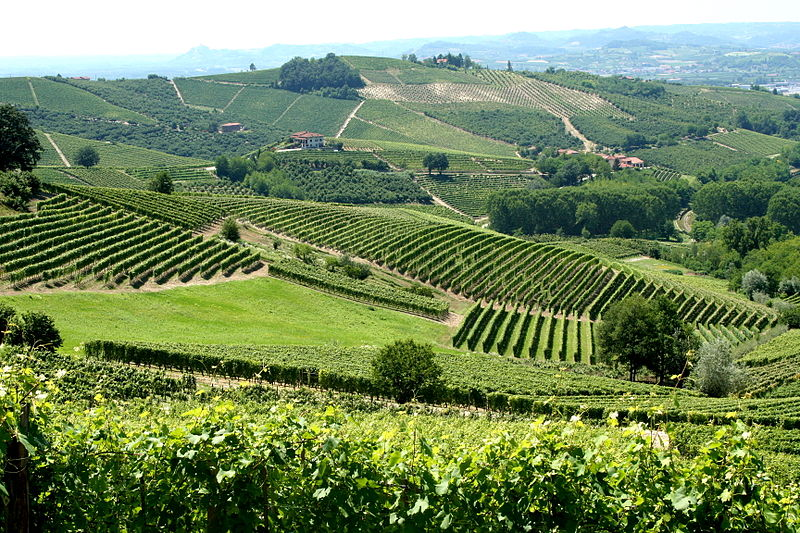
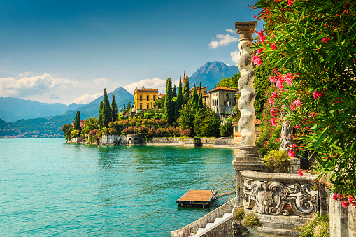

Il paesaggio in Italia è noto per essere bello. Montagne come l'Etna in Sicilia sono attrazioni straordinarie.
Inoltre, ci sono vulcani che hanno alle spalle una storia interessante come il Vesuvio che ha solidificato una
città in cenere dal VI secolo.

